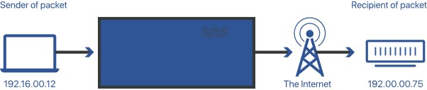

The Internet Protocol (IP) is a collection of rules for routing and addressing data packets so that they can transit across networks and reach their intended destination. Data traveling over the Internet is broken down into smaller units known as packets. Each packet has IP information attached to it, which helps routers transmit packets to the correct location. Every device or domain that connects to the Internet is given an IP address, and data arrives where it is required when packets are routed to the IP address allocated to them. Depending on whatever transport protocol is used in conjunction with IP, packets are treated differently after they arrive at their destination. TCP and UDP are the most widely used transport protocols.
A device or domain that connects to the Internet is given an IP address, which is a unique identification. Each IP address is made up of a string of numbers and letters, such as '192.168.1.1'. Users can visit websites without remembering IP addresses thanks to DNS resolvers, which convert human-readable domain names into IP addresses. Each IP packet will include both the IP address of the device or domain delivering the packet and the IP address of the intended receiver, similar to how a piece of mail includes both the destination and return address. Before each packet of data is sent on its route, an IP header is added to it. This creates IP packets. An IP header is merely a string of bits (ones and zeros) that contains information about the packet, such as the transmitting and receiving IP addresses.
The Internet is made up of linked big networks, each of which is in charge of a block of IP addresses; these large networks are referred to as autonomous systems (AS). Packets are routed between ASes depending on their destination IP addresses using a number of routing protocols, including BGP. Routing tables on routers specify which ASes packets should travel through to get to their target destination as fast as possible. Packets move from one AS to the next until they reach one that claims responsibility for the IP address in question. The packets are then internally routed to the destination by that AS.